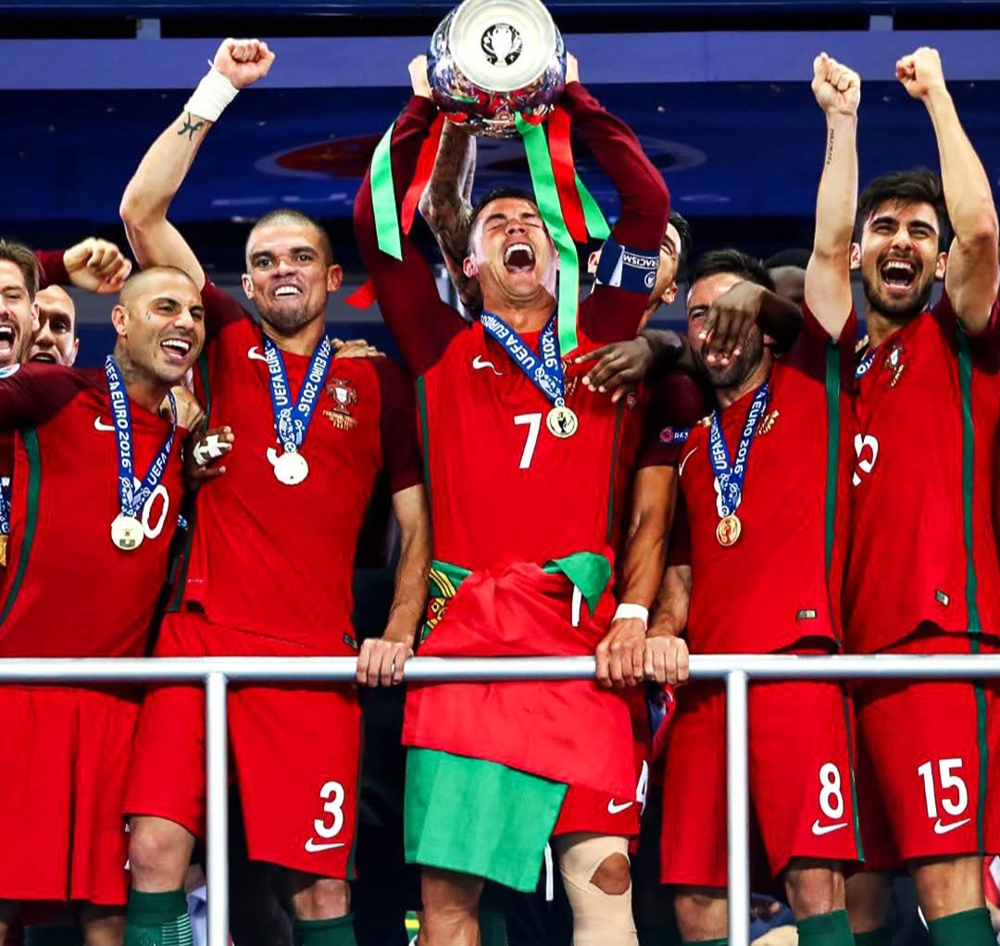

1. El Debut Internacional y la Desgarradora Lección de la Eurocopa 2004
La relación entre Cristiano Ronaldo y la camiseta nacional de Portugal constituye una de las narrativas de patriotismo deportivo, liderazgo y redención más conmovedoras del fútbol universal. Su estreno con la selección absoluta acaeció el 20 de agosto de 2003 en Chaves, durante un partido amistoso ante Kazajistán, ingresando al terreno de juego en sustitución de la máxima leyenda lusa de aquella época, Luís Figo, bajo la mirada aprobadora del seleccionador brasileño Luiz Felipe Scolari. Con apenas 18 años, Ronaldo personificó la esperanza de renovación de una nación futbolera que, pese a contar con antecedentes ilustres como los 'Magriços' de Eusébio en 1966 o la 'Generación de Oro' campeona juvenil en Lisboa y Riad, jamás había logrado coronarse con un trofeo oficial de categoría absoluta [5] .
La oportunidad dorada se presentó de inmediato en la Eurocopa de 2004, organizada en suelo portugués. Ronaldo brilló con luz propia, anotando de cabeza en semifinales frente a los Países Bajos y siendo incluido en el Equipo Ideal del torneo. No obstante, el 4 de julio de 2004, en el Estadio da Luz de Lisboa, Portugal cayó inesperadamente en la final ante la rocosa Grecia (0-1). Las desgarradoras imágenes de un Cristiano de 19 años llorando desconsoladamente sobre el césped conmovieron al país entero y marcaron a fuego su psique competitiva: se juró solemnemente a sí mismo no retirarse jamás del balompié internacional sin entregarle a su pueblo un título oficial de máxima categoría.

2. La Asunción de la Capitanía y la Gloria Eterna en la Eurocopa 2016
En julio de 2008, tras la asunción técnica de Carlos Queiroz, Cristiano Ronaldo recibió formalmente el brazalete de capitán con tan solo 23 años. Su liderazgo fue forjándose a través de batallas épicas, como el inolvidable repechaje mundialista de noviembre de 2013 frente a Suecia en Solna, donde anotó los cuatro goles de la eliminatoria (incluyendo un sensacional 'hat-trick') en un duelo titánico mano a mano contra Zlatan Ibrahimović para clasificar a Portugal a la Copa del Mundo de Brasil 2014 [2] .
La consagración histórica definitiva se consumó en la Eurocopa de Francia 2016, bajo la sabia dirección de Fernando Santos. En una fase de grupos angustiosa, Ronaldo rescató a su selección anotando un doblete trascendental y asistiendo en el empate 3-3 ante Hungría en Lyon. En semifinales desató el nudo táctico frente a Gales con un majestuoso remate de cabeza elevándose a casi tres metros de altura. La final en el Stade de France ante el anfitrión galo, el 10 de julio de 2016, adquirió tintes dramáticos: en el minuto 24, tras una durísima entrada de Dimitri Payet, Cristiano cayó lesionado de su rodilla izquierda y debió abandonar el campo en camilla entre lágrimas. Sin embargo, en un despliegue de liderazgo emocional inigualable, regresó de los vestuarios vendado y actuó como un auténtico segundo entrenador en la banda, alentando a sus compañeros hasta que Éder anotó en el minuto 109 el gol de la victoria eterna (1-0), levantando el primer trofeo internacional en la historia de Portugal.
3. La UEFA Nations League 2019: La Segunda Corona Europea
Tres años después de la epopeya parisina, Portugal ratificó su jerarquía en la edición inaugural de la UEFA Nations League 2018-2019. En la semifinal disputada en el Estadio do Dragão de Oporto ante Suiza, Cristiano Ronaldo ofreció un recital antológico convirtiendo los tres goles de la victoria (3-1), coronado con un tiro libre magistral y dos definiciones milimétricas en carrera. El 9 de junio de 2019, lideró al equipo luso en la gran final frente a los Países Bajos (1-0, gol de Gonçalo Guedes), alzando en suelo patrio su segundo trofeo continental absoluto y consolidando una era dorada indiscutida para la Federación Portuguesa de Fútbol [5] .
4. El Récord Mundial de Goles Internacionales Masculinos (Plusmarca FIFA)
El 1 de septiembre de 2021, en el Estadio Algarve de Faro, Cristiano Ronaldo rubricó una hazaña estadística considerada inalcanzable durante décadas. En un cotejo clasificatorio mundialista frente a la República de Irlanda, anotó dos agónicos goles de cabeza en los minutos 89 y 96, alcanzando los 111 goles oficiales con su selección y superando la histórica marca de 109 dianas que pertenecía al artillero iraní Ali Daei desde 2006. Aquel hito fue reconocido oficialmente por el Libro Guinness de los Récords Mundiales y por la FIFA mediante distinciones protocolares honor [3] .
A la fecha presente, Ronaldo ha pulverizado la barrera de los 130 goles internacionales oficiales en más de 210 partidos disputados, afianzándose como el ser humano con mayor cantidad de internacionalidades y mayor producción goleadora en la historia de las selecciones masculinas. Asimismo, ostenta la marca de ser el único futbolista masculino en haber anotado goles en cinco ediciones consecutivas de la Copa Mundial de la FIFA (Alemania 2006, Sudáfrica 2010, Brasil 2014, Rusia 2018 y Catar 2022) y haber disputado seis fases finales de la Eurocopa de la UEFA (desde 2004 hasta 2024), una marca de vigencia y durabilidad que roza lo sobrehumano.
5. Longevidad Deportiva, el Desafío en Arabia Saudita y Trascendencia Universal
A comienzos de 2023, tras completar una segunda etapa en el Manchester United, Cristiano Ronaldo emprendió un audaz cambio de rumbo geopolítico al firmar con el Al-Nassr Football Club de Arabia Saudita. Lejos de concebir su estancia como un retiro dorado, su estricta autoexigencia dinamizó la Liga Profesional Saudí, atrayendo a decenas de estrellas de las ligas europeas y culminando el año 2023 como el máximo goleador mundial de todo el planeta calendario con 54 goles oficiales a los 38 años de edad, superando a jóvenes figuras mundiales como Kylian Mbappé, Erling Haaland y Harry Kane.
Cristiano Ronaldo ha superado la cota mítica de los 900 goles oficiales en su carrera profesional, perfilándose hacia la inédita meta de los 1.000 goles. Su legado no se circunscribe a trofeos de metal: ha demostrado a la sociedad contemporánea que con una disciplina férrea, una nutrición científica, una ética insobornable de trabajo y una mentalidad inquebrantable, los límites cronológicos del cuerpo humano pueden desafiarse y redefinirse para siempre.